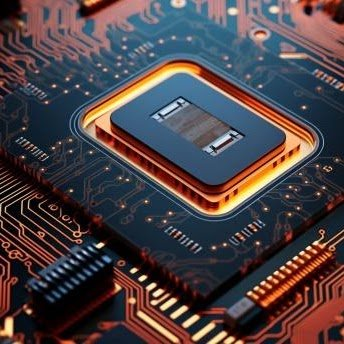
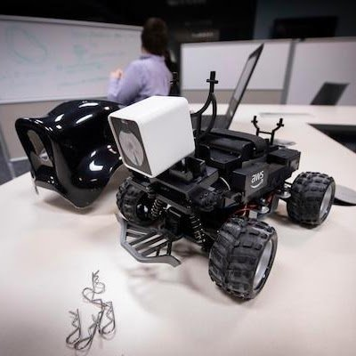

ascii@ajou:~$ whoami
Architectures, Systems, and Computing for Intelligence Innovations
ascii@ajou:~$ cat README.md
ASCII lab explores the future of intelligent computing across architectures, systems, and applications. We design processors and system architectures that perform computing efficiently. Our lab also creates methods that allow AI to work in real-world environments like embedded systems, even with limited resources. By combining hardware and software innovation, we aim to build intelligent systems that are both practical and powerful.
ascii@ajou:~$
Undergraduate interns & Graduate students are welcome.
Please send your inquiries to hjkal@ajou.ac.kr
학부 연구생 및 대학원생을 모집합니다.
문의는 hjkal@ajou.ac.kr 로 연락 주세요.

We cover CPU, GPU, accelerators, and memory architecture. Our work explores these components for future computing demands.

This research involves software acceleration on embedded boards, with a focus on developing AI or robotics frameworks.
We develop system software based on a deep understanding of applications, bridging the gap between hardware and intelligent systems.